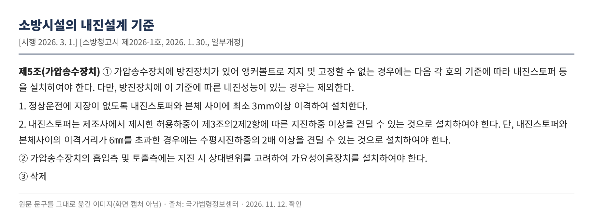
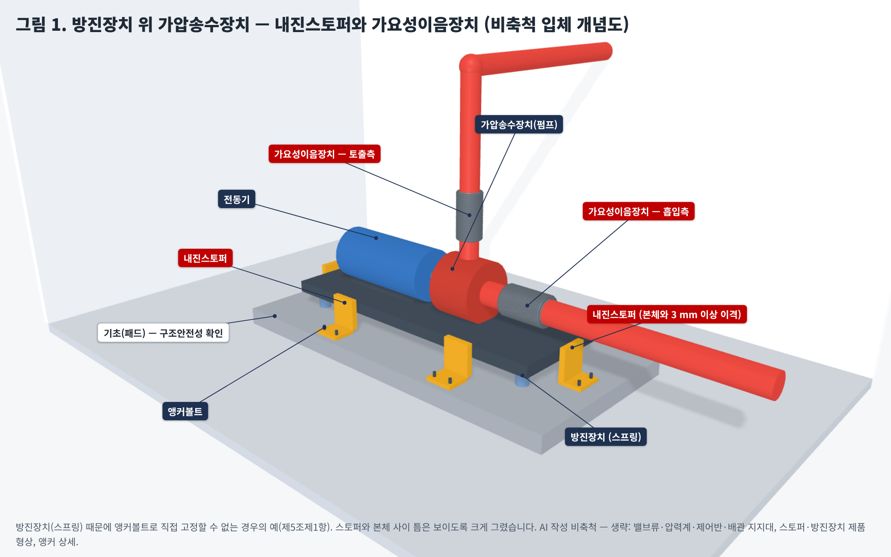
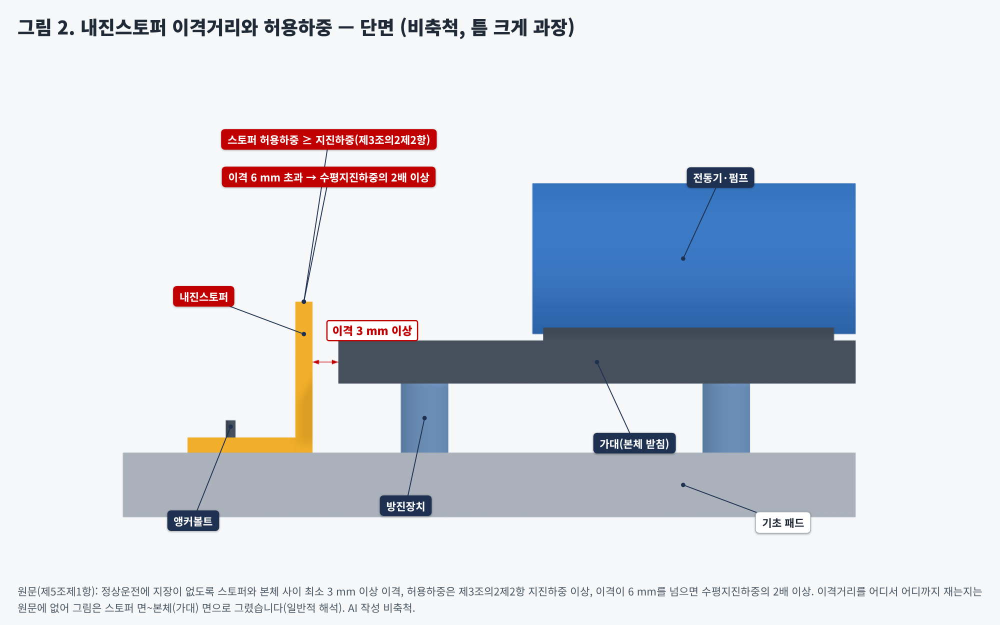

소방펌프 내진, 앵커만 박으면 끝일까요? — 방진장치 위 펌프의 내진스토퍼와 가요성이음
왜? 지진 때 펌프가 미끄러지거나 넘어지지 않게 움직임을 제한하면서, 평소 방진 기능과 운전은 방해하지 않도록 하려는 기준입니다.
1. 공식 기준 원문 (소방시설의 내진설계 기준, 현행)
제5조(가압송수장치) ① 가압송수장치에 방진장치가 있어 앵커볼트로 지지 및 고정할 수 없는 경우에는 다음 각 호의 기준에 따라 내진스토퍼 등을 설치하여야 한다. 다만, 방진장치에 이 기준에 따른 내진성능이 있는 경우는 제외한다.
1. 정상운전에 지장이 없도록 내진스토퍼와 본체 사이에 최소 3mm이상 이격하여 설치한다.
2. 내진스토퍼는 제조사에서 제시한 허용하중이 제3조의2제2항에 따른 지진하중 이상을 견딜 수 있는 것으로 설치하여야 한다. 단, 내진스토퍼와 본체사이의 이격거리가 6㎜를 초과한 경우에는 수평지진하중의 2배 이상을 견딜 수 있는 것으로 설치하여야 한다.
② 가압송수장치의 흡입측 및 토출측에는 지진 시 상대변위를 고려하여 가요성이음장치를 설치하여야 한다.
③ 삭제
제3조의2(공통 적용사항) ③ 앵커볼트는 다음 각 호의 기준에 따라 설치한다.
1. 수조, 가압송수장치, 함, 제어반등, 비상전원, 가스계 및 분말소화설비의 저장용기 등은 "건축물 내진설계기준" 비구조요소의 정착부의 기준에 따라 앵커볼트를 설치하여야 한다.
2. 앵커볼트는 건축물 정착부의 두께, 볼트설치 간격, 모서리까지 거리, 콘크리트의 강도, 균열 콘크리트 여부, 앵커볼트의 단일 또는 그룹설치 등을 확인하여 최대허용하중을 결정하여야 한다.
④ 수조ㆍ가압송수장치ㆍ제어반등 및 비상전원 등을 바닥에 고정하는 경우 기초(패드 포함)부분의 구조안전성을 확인하여야 한다.
용어(제3조): “내진스토퍼”란 지진하중에 의해 과도한 변위가 발생하지 않도록 제한하는 장치, “가요성이음장치”란 지진 시 수조 또는 가압송수장치와 배관 사이 등에서 발생하는 상대변위 발생에 대응하기 위해 수평 및 수직 방향의 변위를 허용하는 플렉시블 조인트 등을 말합니다. 제3조의2제2항제1호는 소방시설의 지진하중을 “건축물 내진설계기준” 중 비구조요소의 설계지진력 산정방법으로 구하도록 하고, 제2호는 허용응력설계법을 적용할 때 그 밖의 방법으로 산정한 설계지진력에 0.7을 곱하도록 합니다.
원문 화면

2. 적용 조건
① 먼저 앵커볼트 고정이 원칙입니다. 가압송수장치도 제3조의2제3항제1호에 따라 “건축물 내진설계기준” 비구조요소 정착부 기준으로 앵커볼트를 설치합니다. 바닥에 고정하면 기초(패드 포함)의 구조안전성도 확인해야 합니다(제3조의2제4항).
② 스토퍼는 “방진장치 때문에 앵커로 지지·고정할 수 없는 경우”의 기준입니다. 원문 단서에 따라, 방진장치 자체에 이 기준에 따른 내진성능이 있으면 제1항(스토퍼)은 적용하지 않습니다.
③ 스토퍼는 두 가지를 함께 봅니다. 본체와의 이격 3 mm 이상(정상운전 지장 방지), 그리고 제조사 허용하중이 제3조의2제2항 지진하중 이상. 이격이 6 mm를 넘으면 기준이 수평지진하중의 2배 이상으로 올라갑니다.
④ 가요성이음장치는 스토퍼 유무와 관계없이 흡입측과 토출측 모두에 둡니다(제5조제2항).
3. 그림으로 보기


그림은 모두 AI(Claude)로 그린 비축척 개념도입니다. 원문에 있는 이격거리·하중 조건만 표시했고, 스토퍼·방진장치의 제품 형상과 개수·배치, 앵커 상세, 밸브류·압력계·배관 지지대는 생략했습니다. 설치 적합 판정용 도면이 아닙니다.
측정 기준점 주의: 원문은 “내진스토퍼와 본체 사이”라고만 쓰며, 본체가 펌프 케이싱인지 가대(베이스)인지, 어느 면에서 재는지는 적혀 있지 않습니다. 그림은 스토퍼 면~가대 면으로 그렸는데 이는 일반적 해석입니다. 스토퍼 개수·배치 방향도 원문에 없습니다. 해석이 갈리는 현장은 관할 소방서에 먼저 확인하세요.
4. 단계별 확인사항
| 단계 | 확인할 것 |
|---|---|
| 설계 | 방진장치 유무 확인 → 앵커 직접 고정인지 스토퍼 방식인지 결정. 지진하중(제3조의2제2항) 산정 근거, 앵커볼트 최대허용하중 검토(정착부 두께·간격·모서리 거리·콘크리트 강도·균열 여부), 기초 패드 구조안전성 검토를 계산서에 남김 |
| 시공 | 스토퍼–본체 이격 3 mm 이상(운전 중 접촉 없음). 이격이 6 mm를 넘게 시공되면 그 스토퍼의 허용하중이 수평지진하중의 2배 이상인지 다시 확인. 흡입측·토출측 가요성이음장치 모두 설치 |
| 감리 | 스토퍼 제조사 허용하중 자료와 산정 지진하중 대조, 실측 이격거리 기록. 방진장치에 내진성능이 있다고 스토퍼를 생략했다면 그 근거 자료 확인 |
| 유지관리·점검 | 펌프 교체·정비 후 스토퍼 이격 변화, 스토퍼 앵커 풀림, 가요성이음장치 손상·과도한 변형 여부 재확인 |
5. 적용 시점과 경과조치
현행본: 소방청고시 제2026-1호(2026. 1. 30. 발령, 2026. 3. 1. 시행).
연혁 대조: 제5조 전체(제1항 제1·2호, 제2항, 제3항 “삭제”)와 제3조의2제3항·제4항 문구를 개정 전 판본(소방청고시 제2022-76호, 2022. 12. 1. 시행)과 국가법령정보센터에서 대조한 결과 같습니다. 제2026-1호 개정에서 이 조문들은 바뀌지 않았습니다.
경과조치(부칙 제2026-1호 제2조): 이 고시 시행 전에 건축허가 등의 신청 또는 신고를 하거나 소방시설공사의 착공신고를 한 특정소방대상물에 대해서는 종전의 기준에 따릅니다.
확인하지 못한 것: 제2022-76호보다 이전 판본(제2021-15호 등)의 제5조 문구와 제5조제3항이 삭제된 시점·삭제 전 내용은 이번에 대조하지 않았습니다. 해당 판본이 적용되는 현장은 원문을 따로 확인하세요.
공식 원문 링크
· 소방시설의 내진설계 기준 현행(소방청고시 제2026-1호) — 본문·부칙·별표
· 개정 전 판본(소방청고시 제2022-76호, 2022. 12. 1. 시행)
· 같이 보기: 가지배관 고정장치 — 제13조·별표 4